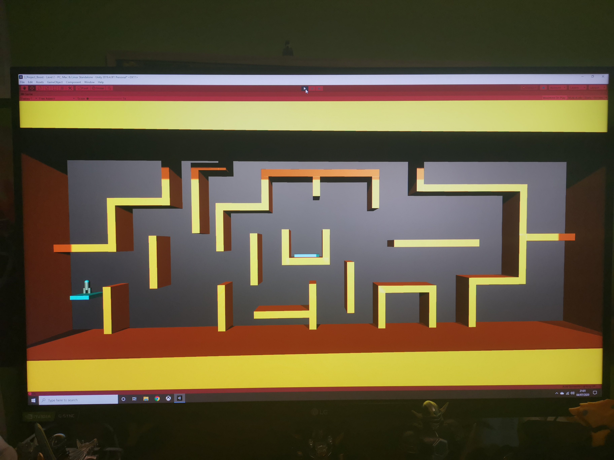
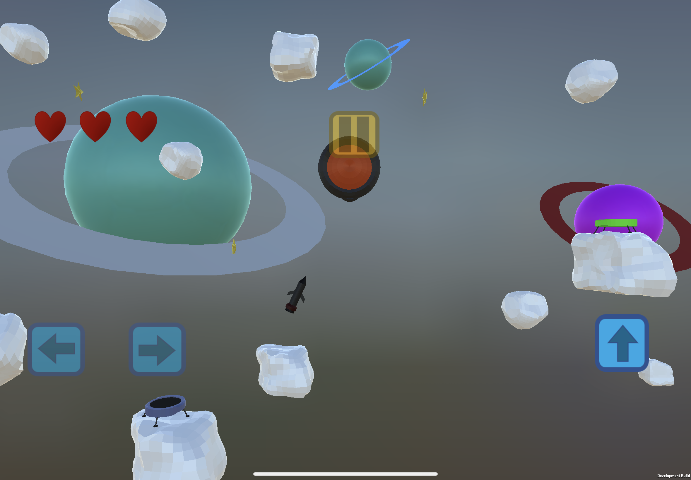
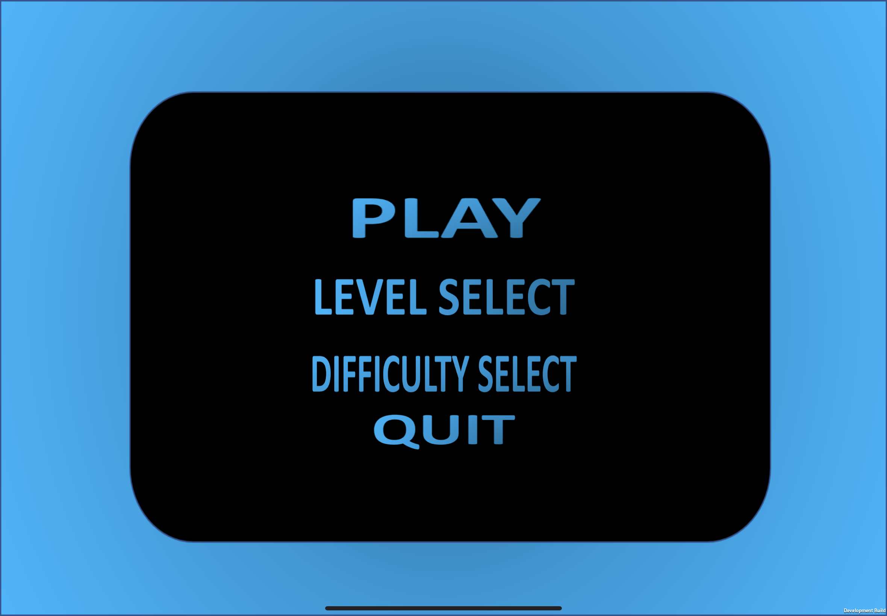
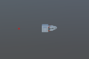
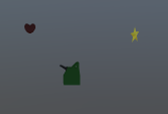

Intro
As I want to pursue a career in game development, after graduating in the first half of 2020, I started creating my own game/games. The first game I created was Asteroid Void. My original plan for the game looks very different from the current version of the game.
First Version
The first version of the game included a black backdrop with rectangles of various colours acting as objects the player had to avoid. The rectangles could also move to make it harder for the player. The more and more I worked on the game the more I disliked it. I was unsure what needed changing so I asked some friends for some feedback on what to improve. One of them said the game looked lifeless and I agreed. The games lighting looked didn’t look correct against the black background. Using rectangles as obstacles also seemed incorrect considering the game is about controlling a space rocket. The game also ad large yellow rectangles surrounding the game’s border. This made the game feel very small.
Current version
The version I’m currently developing looks very different compared to the previous version. The background is now no longer a solid colour, but rather a collection of 3D models placed together to make the game seem like it’s in outer space. I also removed the rectangles which were surrounding the border to make the game look bigger. Instead of rectangles acting like obstacles for the player to avoid, I modelled some asteroids in blender to fit with the game’s “space” look. Unlike the previous version, I have also added enemies to the game. These can be seen further down the page.
Main Menu
From here the player is able to play the game from the first level by clicking on the (Play) option. When the player clicks on the (level select) option they are able to select 4 different difficulty settings each with their own unique set of levels. In the current build of the game, I have only created levels for the first two difficulties. When the player accesses a difficulty setting, they are able to see a score for each of the levels they have completed in the form of stars. The stars also update if they improve their score.
Playing a level
The aim of the game is to move the rocket from one side of the screen to the other while avoiding objects and collecting stars. Once the user completes a level within the game, they are given the option to continue playing, or to go back to the game’s main menu. If the player plays the game on a PC they can use the arrow keys or w,a,s,d, keys to move the rocket. On a mobile device UI buttons appear on screen to allow players to play the game on a mobile device.
Enemies
Throughout the game, there are various enemies the player can come across.
HIVE
The hive is a circular shaped enemy which rotates and shoots out smaller versions of itself to attack the player. When the player comes in contact with this enemy, they lose 1 heart of health.

TADPOD
Very small rocket which is shaped like a tadpole. It fires small streams of bullets towards the player which removes 1 heart of health.
Items/power-ups
All assets visible in the game were created by me using blender. The game is written in Unity C#. The game uses touch controls but also a keyboard and mouse which allows the game to be played on a mobile device or a computer.
